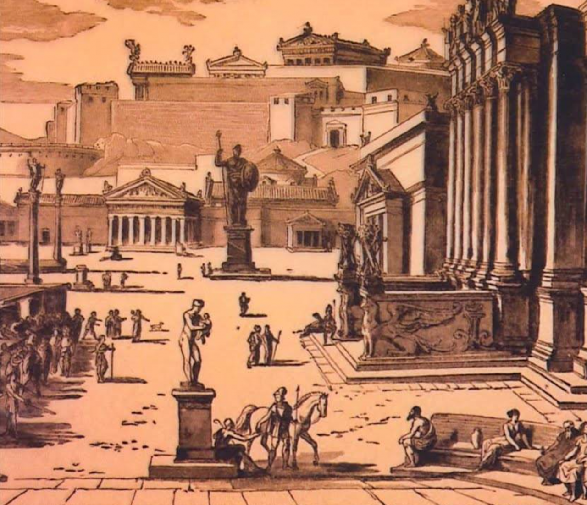

SPARTA was a prominent city-state in Laconia in ancient Greece. in southeastern Peloponnese.[2] Around 650 BC, it rose to become the dominant military land-power in ancient Greece. Sparta was recognized as the leading force of the unified Greek military during the Greco-Persian Wars, in rivalry with the rising naval power of Athens. Sparta was the principal enemy of Athens during the Peloponnesian War (431–404 BC),[4] from which it emerged victorious after the Battle of Aegospotami. The decisive Battle of Leuctra against Thebes in 371 BC ended the Spartan hegemony, although the city-state maintained its political independence until its forced integration into the Achaean League in 192 BC. The city nevertheless recovered much autonomy after the Roman conquest of Greece in 146 BC and prospered during the Roman Empire, as its antiquarian customs attracted many Roman tourists .
However, Sparta was sacked in 396 AD by the Visigothic king Alaric, and underwent a long period of decline, especially in the Middle Ages, when many of its citizens moved to Mystras . Modern Sparta is the capital of the southern Greek region of Laconia and a center for processing citrus and olivesSparta was recognized as the leading force of the unified Greek military during the Greco-Persian Wars , in rivalry with the rising naval power of Athens.Sparta was the principal enemy of Athens during the Peloponnesian War (431–404 BC),[4] from which it emerged victorious after the Battle of Aegospotami . The decisive Battle of Leuctra against Thebes in 371 BC ended the Spartan hegemony, although the city-state maintained its political independence until its forced integration into the Achaean League in 192 BC . The city nevertheless recovered much autonomy after the Roman conquest of Greece in 146 BC and prospered during the Roman Empire, as its antiquarian customs attracted many Roman tourists. However, Sparta was sacked in 396 AD by the Visigothic king Alaric, and underwent a long period of decline, especially in the Middle Ages, when many of its citizens moved to Mystras . Modern Sparta is the capital of the southern Greek region of Laconia and a center for processing citrus and olives.
In antiquity, the city-state was known as Lacedaemon (Λακεδαίμων, Lakedaímōn), while the name Sparta referred to its main settlement in the valley of Evrotas river in Laconia,
Achaeology of the classical period

Suppose the citySPATAserted, the ground-plan, distant ages would be very unwilling to believe that the power of the Lacedaemonians was at all equal to their fame. Their city is not built continuously, and has no splendid temples or other edifices; it rather resembles a group of villages, like the ancient towns of Hellas, and would therefore make a poor show. Until the early Until the early 20th century, the chief ancient buildings at Sparta were the theatre, of which, however, little showed above ground except portions of the retaining walls; the so-called Tomb of Leonidas, a quadrangular building, perhaps a temple, constructed of immense blocks of stone and containing two chambers; the foundation of an ancient bridge over the Eurotas; the ruins of a circular structure; some remains of late Roman fortifications; several brick buildings and mosaic pavements.
[27]20th century, the chief ancient buildings at Sparta were the theatre, of which, however, little showed above ground except portions of the retaining walls; the so-called Tomb of Leonidas, a quadrangular building, perhaps a temple, constructed of immense blocks of stone and containing two chambers; the foundation of an ancient bridge over the Eurotas; the ruins of a circular structure; some remains of late Roman fortifications; several brick buildings and mosaic pavements. [27] the foundation of an ancient bridge over the Eurotas; the ruins of a circular structure some remains of late Roman fortifications; several brick buildings and mosaic pavements.[27]20th century, the chief ancient buildings at Sparta were the theatre, of which, however, little showed above ground except portions of the retaining walls; the so-called Tomb of Leonidas, a quadrangular building, perhaps a temple, constructed of immense blocks of stone and containing two chambers; the foundation of an ancient bridge over the Eurotas; the ruins of a circular structure; some remains of late Roman fortification